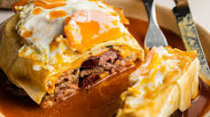

Homemade francesinha

Delicious, moisty and simple francesinha to make at home!
Ingredients:
- Porto wine, white wine and beer
- Mozzarella cheese
- Beef and Sausage
- Pasta sauce
- Garlic
- Spices
- Egg
- olive oil
- Tomato sauce and onion
Step by step:
- Prepare the mixture of the liquids and boil it!
- Season the meat and toast the buns, and layer it!
- After doing the layers, proceed to bake it for 20m! and add the boiling sauce!